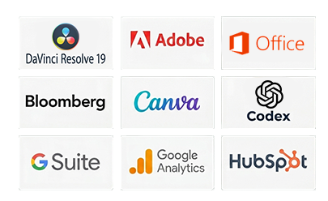
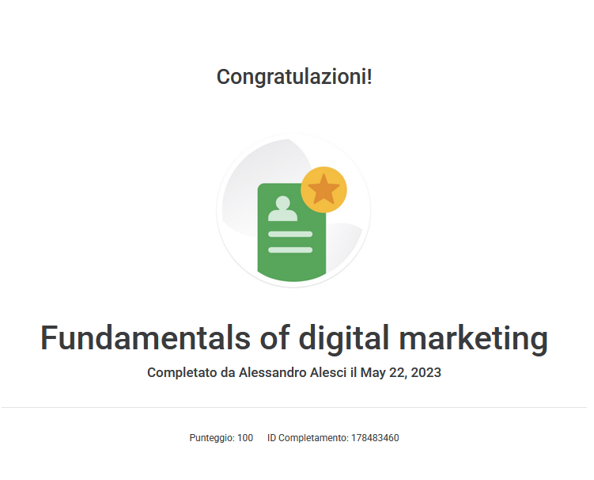
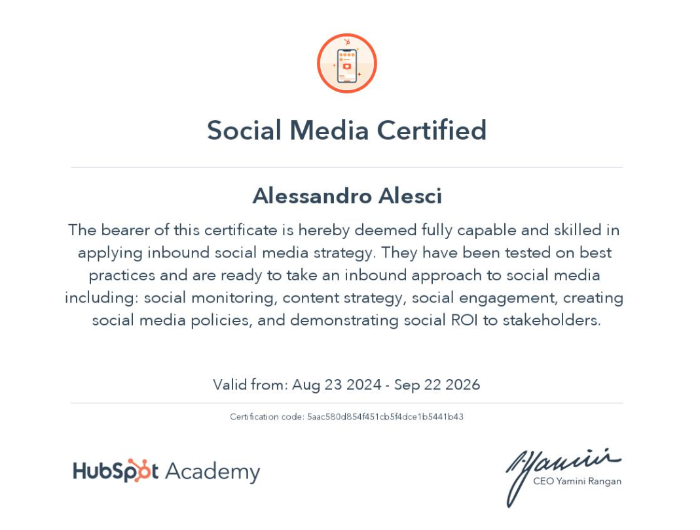
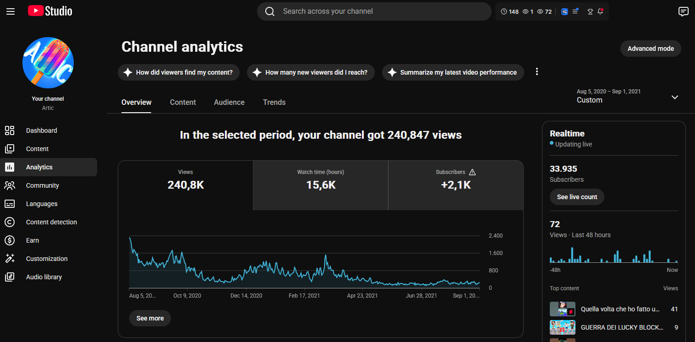
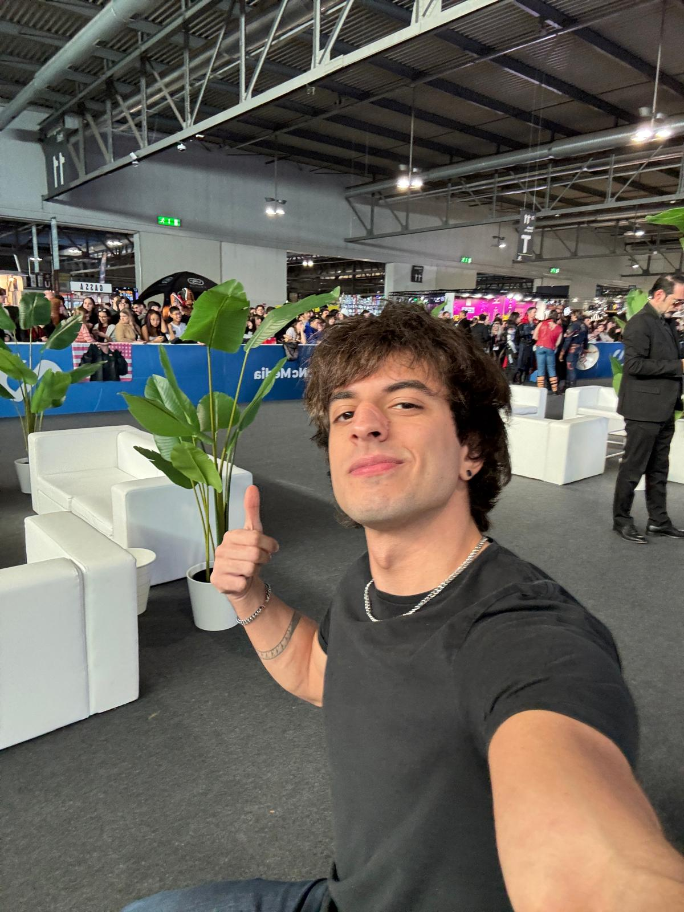

Alessandro
Alesci
Digital Marketer & Content Creator

About
me.
Hi! I’m Alessandro Alesci, a creative digital marketer and content creator with a track record in content, community, and campaign strategy. I built a YouTube community of 70,000 subscribers, produced over 200 videos, and partnered with over 20 brands.
Alongside this, I drive analytical operations and project leadership at Bloomberg Intelligence, translating market data into clear insights and better decisions.
My studies in Business Economics, combined with professional certifications in Google Digital Marketing and HubSpot Social Media Marketing, allow me to blend data-driven strategies with engaging storytelling.
Skills &
Certifications



- 01 — HubSpot Social Media Marketing
- 02 — Google Fundamentals of Digital Marketing
- 03 — Bloomberg Market Concepts
What I
Can Do
Real
numbers.
I combine data-led daily operations at Bloomberg with narrative skills to analyze audiences and craft social strategies that maximize reach and engagement.

Loyalty by
design.
I managed a Made-in-Europe apparel line at accessible prices, so fans wearing it became an organic advertising channel for my content. Promotional funnels drove volume, retention and long-term community loyalty.
Built for
attention.
I used timely trends and simple product storytelling—including Tesla content—to reach young audiences. Both approaches generated tens of thousands of likes and hundreds of thousands of views.
Measurable
impact.
My first World of Warships campaign generated more than 300 €10 subscriptions from a €700 campaign, opening a recurring Twitch partnership. I have also collaborated with Razer and Treyarch as a creator and social media manager.
300+ subscriptions
Community,
in person.
At major pop-culture conventions, I have hosted meet & greets that turn an online audience into a stronger real-world community—connecting comfortably with children, parents, peers and professionals.
